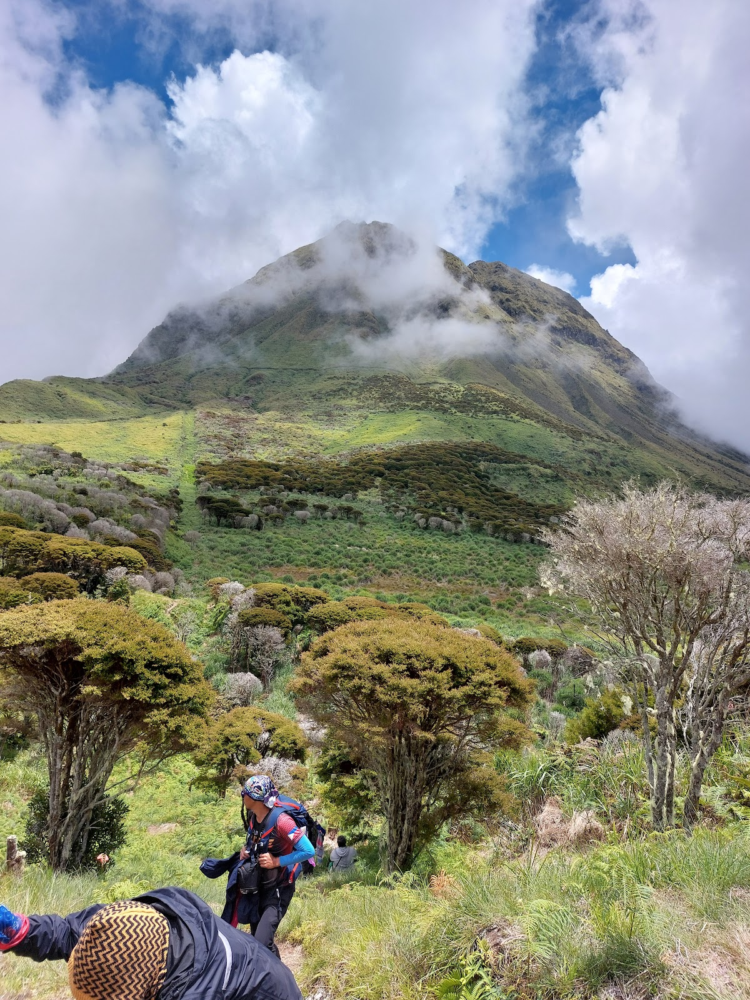
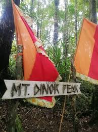
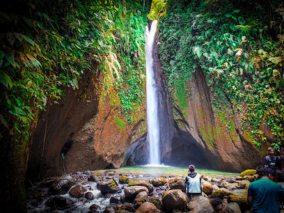

Davao del Sur is synonymous with world-class trekking. The province offers multiple trails up Mt. Apo, including the popular Kapatagan and Sibulan trails, each offering different levels of difficulty and distinct ecological views. For beginners, the lower foothills of Mt. Dinor offer rewarding day hikes with panoramic views of the Davao Gulf.
Challenge yourself on routes recognized by mountaineers across the globe.
Enjoy rewarding day hikes in the lower foothills, perfect for all fitness levels.
Trek safely with the help of experienced indigenous guides who know the mountains best.
Davao del Sur is synonymous with adventure. Whether you are aiming to conquer the towering summit of Mt. Apo or looking for a scenic day hike through pine forests and waterfalls, the province offers trails that cater to every type of explorer. Beyond Mt. Apo, the province features destinations like Mt. Dinor and the trails of Kapatagan. Trekking here isn't just a physical activity; it's a chance to walk through diverse ecosystems, spot rare wildlife like the Philippine Eagle, and support local eco-tourism initiatives.

A challenging but scenic route up Mt. Apo, featuring lush rainforests and steep river crossings.

A perfect beginner-friendly mountain offering panoramic views of the Davao Gulf at the summit.

A rugged hike through coffee plantations leading to one of the tallest waterfalls in the region.
Fly to Francisco Bangoy International Airport in Davao City, then take a bus south.
November to May is the dry season — ideal for outdoor activities and beach trips.
Davao del Sur offers affordable accommodations, food, and transport options.